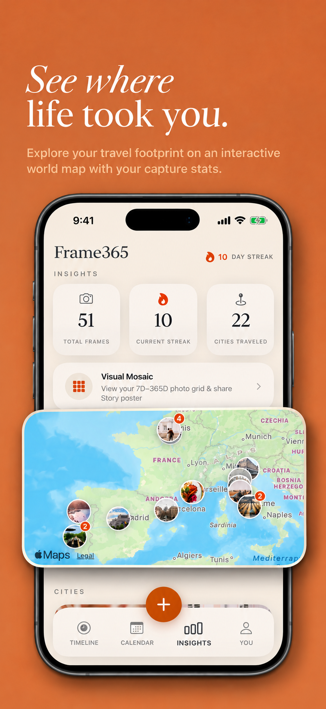
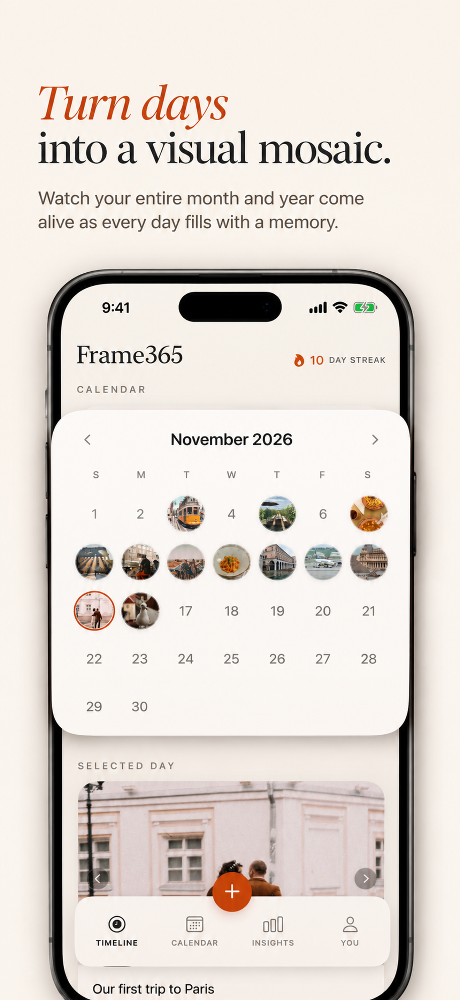

01 · DAILY RITUAL
One photo, one place, one honest note.
Capture a single meaningful frame each day without the clutter of a 30,000-photo camera roll. Every memory stays anchored to the exact date and city it happened.

Frame365 is a private daily photo journal that anchors each day with one meaningful photo, a location, and an honest note. Turn 365 days into a visual mosaic and personal world map — stored privately in your iCloud.



Capture a single meaningful frame each day without the clutter of a 30,000-photo camera roll. Every memory stays anchored to the exact date and city it happened.
Switch effortlessly between 7D, 30D, 90D, and 365D photo grids. Export clean, high-resolution Story posters ready to share — or keep strictly for yourself.
Your daily frames automatically pin onto an interactive personal world map and organize into chronological city collections — from weekend escapes to cross-continent journeys.
Life gets busy. Add photos to any past date on your calendar, edit captions anytime, and keep your 365-day visual timeline complete.

Your journal belongs only to you. Sync privately across your Apple devices via your personal iCloud (CloudKit) and protect your memories behind Face ID.

Start capturing for free forever, subscribe flexibly, or unlock every Pro feature with a single one-time Lifetime payment.
Free Forever
No account required · Private on-device
Pro Yearly
Or $6.99/month · Cancel anytime
Pro Lifetime
Zero recurring subscriptions · Yours forever
Frame365 is a private daily photo journal for iOS built around a calm one-photo-a-day ritual. Each day you anchor a single photograph with a location and an honest note, and the app automatically builds your timeline, calendar, 7D to 365D visual mosaic, and personal world map.
Unlike 1 Second Everyday, which focuses on short video mashups, Frame365 is designed for still photography, concise daily reflections, city travel archives, and exportable visual mosaic grids. Unlike Day One, which is a multi-entry long-form text diary, Frame365 keeps a distraction-free one-frame-per-day cadence and offers an optional one-time Lifetime purchase instead of locking you into a permanent subscription.
Your photos are 100% private. Frame365 has zero social feeds, zero followers, zero public profiles, and zero third-party ad trackers. Your entries stay locally on your iPhone, with optional private Apple iCloud (CloudKit) sync and Face ID biometric lock.
Yes. Frame365 offers a Free Forever tier, optional Pro Monthly ($6.99/month) and Pro Yearly ($24.99/year) subscriptions, and a Pro Lifetime one-time payment ($59.99) that unlocks every Pro feature permanently without recurring fees.
Missing a day never locks your journal. That date simply stays open in your calendar and mosaic. With Frame365 Pro, you can tap any past date in your calendar to backfill a photo from your library, edit captions anytime, and keep your 365-day timeline complete.
Yes. Frame365 Pro supports private iCloud backup and sync powered by Apple CloudKit. Your photos, notes, and location metadata sync privately through your personal Apple ID and restore seamlessly on a new iPhone.